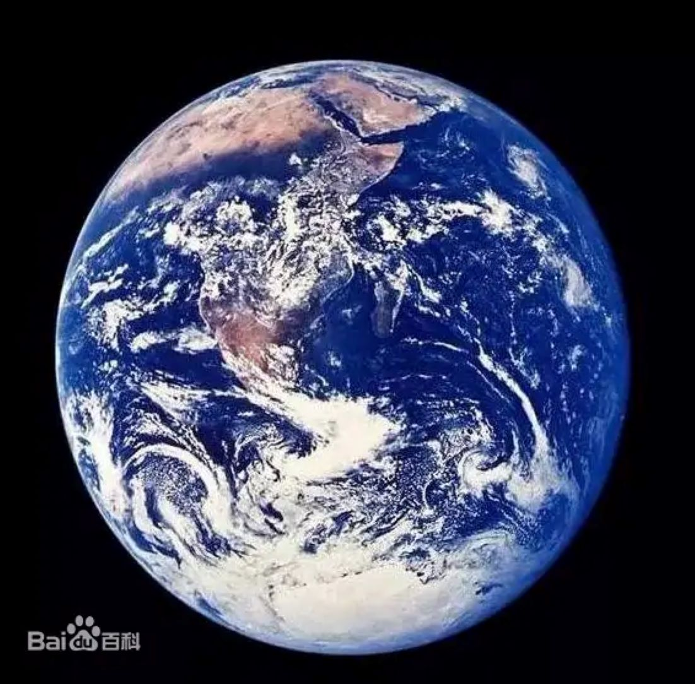

|  | 地球（英文名：Earth；拉丁文：Terra）是距离太阳1.5亿公里的第三颗行星，也是人类已知的唯一孕育和支持生命的天体。地球的表面大约 29.2% 是由大陆和岛屿组成的陆地，剩余的 70.8% 被水覆盖，大部分被海洋、海湾和其他咸水体覆盖，也被湖泊、冰川、河流和其他淡水体覆盖着，尤其冰川覆盖最多,它们共同构成了水圈。地球的大部分极地地区都被冰覆盖。地球外层分为几个刚性构造板块，它们在数百万年的时间里在地表迁移，而其内部仍然保持活跃，有一个固体铁内核、一个产生地球磁场的液体外核，以及一个驱动板块构造的对流地幔等。 地球的大气主要由氮和氧组成。热带地区接收的太阳能多于极地地区，并通过大气和海洋环流重新分配。温室气体在调节地表温度方面也发挥着重要作用。一个地区的气候不仅由纬度决定，还由海拔和与该地区和海洋的接近程度等因素决定。热带气旋、雷暴、热浪等恶劣天气多发于广大地区，对生活影响较大。 地球的引力会与太空中的其他物体相互作用，尤其是月球，它是地球唯一的天然卫星。地球绕太阳公转一周大约需要 365.25 天。地球的自转轴相对于其轨道平面倾斜，从而在地球上产生季节。地球和月球之间的引力相互作用引起潮汐，稳定地球在其轴上的方向，并逐渐减慢其自转速度。 |
返回 |